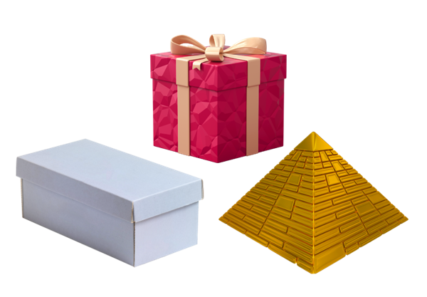

Figuras planas e não planas
Ao observar os objetos à nossa volta, percebemos que eles apresentam as mais variadas formas, como por exemplo os objetos mostrados abaixo que possuem diferentes características e se assemelham a figuras geométricas. Veja:
Nos objetos representados acima, a superfície da placa de trânsito
dá a ideia
de uma figura geométrica plana, enquanto o chapéu de festa lembra uma
figura geométricas não planas.
Os objetos planos são muito finos! Podemos até imaginar
que eles não têm altura, isto é, que são bidimensionais e
que ficam totalmente em contato com a superfície, por isso dão a ideia de figuras geométricas
planas. Já os objetos tridimensionais possuem comprimento, altura, e largura. Eles não ficam
totalmente em contato com a superfície, por isso dão ideia de figuras geométricas não planas
Sólidos geométricos
Algumas figuras geométricas não planas são chamadas de sólidos geométricos . As diferentes formas presentes nas obras de arte dão a ideia de sólidos geométricos, como podemos observar nestas fotos:


Corpos redondos e poliedros
Os sólidos geométricos podem ser divididos em grupos, entre eles: corpos redondos e poliedros. Essa divisão considera a presença ou não de formas arredondadas.
| Objetos com formato de corpos redondos | Objetos com formato de poliedros |
|---|---|

|

|
Os corpos redondos são sólidos geométricos que têm partes não planas, curvas, ou seja pelo menos uma parte com forma arredondada. A Esfera é um exemplo de corpo redondo. Veja os exemplos.

Os corpos não redondos são chamados de poliedros. A palavra Poliedro significa "muitas faces". Logo, chamamos de poliedros os sólidos que têm todas as faces planas. A pirâmide é um exemplo de poliedro. Veja mais alguns exemplos.
Poliedros
Um poliedro é um sólido geométrico delimitado por quatro ou mais polígnonos. Os polígonos que limitam o poliedro são chamdos faces e seus lados e vértices são denominados, respectivamente, arestas e vértices.

A intersecção entre duas faces forma uma aresta e a intersecção de, no mínimo, duas arestas formam um único vértice.
Elementos dos poliedros
Um poliedro possui os seguintes elementos:
Face: polígono que limita o poliedro.
Aresta: lado da face.
Vértice: extremidade das arestas ou, simplesmente, o ponto comum entre ao
menos duas
arestas.
Diagonal da face: segmente que une dois vértices não consecutivos de uma face
do
poliedro.
Diagonal do polígono: também chamada apenas de diagonal, é o segmento
que une dois
vértices não consecutivos de faces distintas do poliedro.
Poliedros convexos e côncavos

Poliedros convexos são aqueles que, quando se prolonga qualquer uma de suas faces, estas não cortam o poliedro.
Já um poliedro côncavo é aquele em que pelo menos uma face, ao ser prolongada, corta o poliedro.
Fórmula de Euler para poliedros
Em um poliedro convexo qualquer, é sempre válida a seguinte relação, chamada de fórmula de Euler:

em que F representa o número de faces, V, o número de vértices e A, o número de arestas.
Cones

Quando chega o calor, o sorvete é um alimento irresistível. Existem vários tipos de sorvete, como o picolé e o sundae, mas o de casquinha, além de ser delicioso, tem uma relação com a Matemática: o cone.
Quando se reúnem todos os segmentos de reta formados entre os pontos de um circulo e um ponto V fora dele, forma - se um corpo redondo chamado cone.
Elementos de um cone
Base: um círculo.
Vértice: ponto externo ao círculo.
Altura: distância do vértice ao plano que contém a base.
Eixo: reta que contém o centro do círculo e o
vértice do cone.
Geratriz: segmento cujas extremidades são o vértice do cone e
um ponto da circunferência da base.
Tipos de Cone
Quando o eixo é perpendicular à base, o cone é reto; caso contrário, o cone é oblíquo .

Área dos cones retos
A planificação de um cone reto é composta pelo círculo da base e por um setor circular cujo raio é a geratriz. O comprimento desse setor coincide com o comprimento do comprimento de seu arco, que coincide com o comprimento do círculo da base.
A planificação de um cone reto é composta pelo círculo da base e por um setor circular cujo raio é a geratriz. O comprimento desse setor coincide com o comprimento do comprimento de seu arco, que coincide com o comprimento do círculo da base.